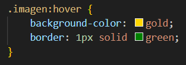
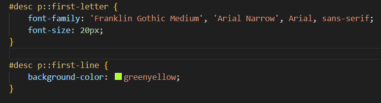

Regresar
Evidencia 2
Imagenes
Selector de Clase
CSS

Resultado en la página de Personalidad (Todo lo que esta encerrado en el rectangulo negro es el resultado)

Selector Universal
CSS

Resultado en la página de Personalidad (Tambipen apliqué el selector universal todo lo que va dentro del rectángulo)

Selector por ID
CSS

Resultado en la página de Personalidad (Aqui mismo en personalidad hice ver que las letras se vieran mas grandes)

Selector de clase de un tag en particular
CSS

Resultado en la página de Deportes (Aqui se encierra en un marco rojo por medio de una clase en particular)

Selector por Atributo
CSS

Resultado en la página principal de pasatiempos (Todos los links para acceder las demás páginas están en rojo)

Selector por Lista
CSS

Resultado en la página personalidad (Los titulos de la tabla tienen un borde de color naranja por medio del selector)

Selector Descendiente
CSS

Resultado en la página música (Dentro de la sección del video del nivel, se aplicará un estilo azul a lo que hay ahi)

Selector Compuesto
CSS

Resultado en la página música (Aqui el titulo le puse un color de letra de color azul)

Selector de descendientes hijos directos
CSS

Resultado en la página música (Después del selector de descendientes, le especifique uno después que es el de hijos con un color rojo)

Selector Hermano General
CSS

Resultado en la página música (Se aplica en mis mejores vehículos donde resalto los que mas me gustan con este selector)

Selector Hermano Adyacente
CSS

Resultado en la página música (Se aplica en donde explico mis futuros retos en el juego)

Pseudoclases
CSS

Resultado en la página música (En la parte de "Imagen del Nivel" al pasar el cursor toma un color amarillo y borde verde)

Pseudoelementos
CSS

Resultado en la página principal de Pasatiempos (AL inicio de la página se muestra como la primera letra es mas grande y que se pinta solo la primera línea del párrafo en verde)